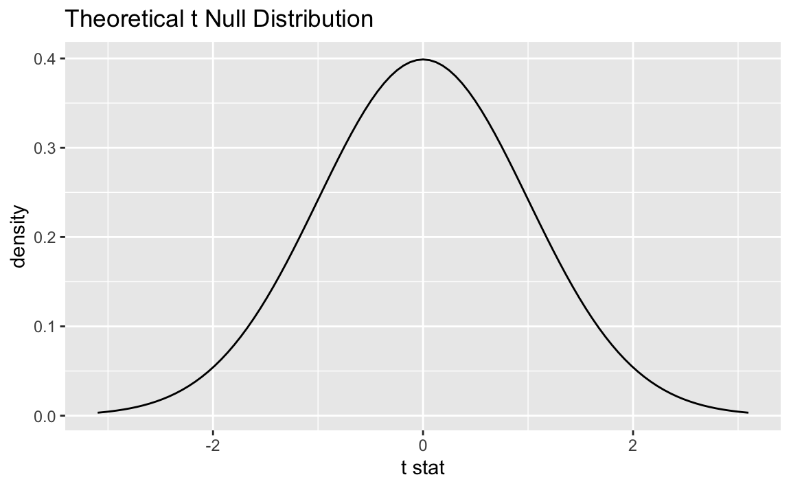

library(tidyverse)
library(tidymodels)
library(openintro)Length of gestation
Application exercise
In this application exercise, we’ll do inference for a single mean, using simulation-based and mathematical models.
Packages
We’ll use the tidyverse, tidymodels, and openintro packages.
Data
Every year, the United States Department of Health and Human Services releases to the public a large dataset containing information on births recorded in the country. This dataset has been of interest to medical researchers who are studying the relation between habits and practices of expectant mothers and the birth of their children. In this case study we work with a random sample of 1,000 cases from the dataset released in 2014. The length of pregnancy, measured in weeks, is commonly referred to as gestation.
glimpse(births14)Rows: 1,000
Columns: 13
$ fage <int> 34, 36, 37, NA, 32, 32, 37, 29, 30, 29, 30, 34, 28, 28,…
$ mage <dbl> 34, 31, 36, 16, 31, 26, 36, 24, 32, 26, 34, 27, 22, 31,…
$ mature <chr> "younger mom", "younger mom", "mature mom", "younger mo…
$ weeks <dbl> 37, 41, 37, 38, 36, 39, 36, 40, 39, 39, 42, 40, 40, 39,…
$ premie <chr> "full term", "full term", "full term", "full term", "pr…
$ visits <dbl> 14, 12, 10, NA, 12, 14, 10, 13, 15, 11, 14, 16, 20, 15,…
$ gained <dbl> 28, 41, 28, 29, 48, 45, 20, 65, 25, 22, 40, 30, 31, NA,…
$ weight <dbl> 6.96, 8.86, 7.51, 6.19, 6.75, 6.69, 6.13, 6.74, 8.94, 9…
$ lowbirthweight <chr> "not low", "not low", "not low", "not low", "not low", …
$ sex <chr> "male", "female", "female", "male", "female", "female",…
$ habit <chr> "nonsmoker", "nonsmoker", "nonsmoker", "nonsmoker", "no…
$ marital <chr> "married", "married", "married", "not married", "marrie…
$ whitemom <chr> "white", "white", "not white", "white", "white", "white…Bootstrap confidence intervals
Exercise 1
Construct and interpret a 95% confidence interval, using the standard error method with the get_ci() function, for the average length of gestation.
set.seed(12345)
boot_dist <- births14 |>
specify(response = weeks) |>
generate(reps = 1000, type = "bootstrap") |>
calculate(stat = "mean")
obs_stat <- births14 |>
specify(response = weeks) |>
calculate(stat = "mean")
boot_dist |>
get_ci(
type = "se",
point_estimate = obs_stat
)# A tibble: 1 × 2
lower_ci upper_ci
<dbl> <dbl>
1 38.5 38.8Add response here.
Exercise 2
Construct the interval without using the get_ci() (or get_confidence_interval()) function.
sample mean \(\pm\) ME
= sample mean \(\pm\) critical value \(\times\) SE of the sample mean
= sample mean \(\pm\) 2 \(\times\) SE of the sample mean
= sample mean \(\pm\) 2 \(\times\) SD of the bootstrap distribution
se <- boot_dist |>
summarize(se = sd(stat)) |>
pull(se)
obs_stat |>
mutate(
lower = stat - 2*se,
upper = stat + 2*se
)Response: weeks (numeric)
# A tibble: 1 × 3
stat lower upper
<dbl> <dbl> <dbl>
1 38.7 38.5 38.8Exercise 3
Would you expect a 90% confidence interval for the average length of gestation to be wider or narrower? Explain your reasoning.
Narrower.
Exercise 4
Now construct a 90% confidence interval for the average length of gestation and confirm your answer from the previous exercise. Repeat as little of your code as possible.
#obs_stat |>
# mutate(
# lower = stat - 1.64*se,
# upper = stat + 1.64*se
# )
boot_dist |>
get_ci(
level = 0.90,
type = "se",
point_estimate = obs_stat
)# A tibble: 1 × 2
lower_ci upper_ci
<dbl> <dbl>
1 38.5 38.8Confidence intervals with mathematical models
If technical conditions are satisfied, the distribution of the sampling mean (i.e., the sampling distribution) follows the t-distribution with n - 1 degrees of freedom, where n is the sample size.
sampling_dist <- births14 |>
specify(response = weeks) |>
assume(distribution = "t")
sampling_distA T distribution with 999 degrees of freedom.visualize(sampling_dist)

Exercise 5
Construct and visualize a confidence interval using mathematical models for the average length of gestation.
# option 1 - using infer pipelines: ci using mathematical models
births14 |>
specify(response = weeks) |>
assume(distribution = "t") |>
get_ci(point_estimate = obs_stat, type = "se")# A tibble: 1 × 2
lower_ci upper_ci
<dbl> <dbl>
1 38.5 38.8# option 2 - by hand:
## se using mathematical models
s <- births14 |>
summarize(s = sd(weeks)) |>
pull(s)
n <- nrow(births14)
se <- s / sqrt(n)
se[1] 0.08111118## me using mathematical models
me <- 2 * se
## ci using mathematical models
xbar <- obs_stat |>
pull(stat)
xbar + c(-1, 1) * me[1] 38.50378 38.82822